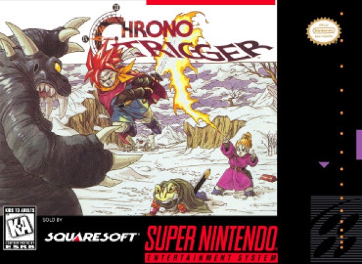

RPG · 1995
Chrono Trigger
Time travel with no wasted scene and thirteen endings to prove it.

Cover: Wikipedia: Chrono Trigger
Facts
- Released
- 1995-03-11
- Genre
- JRPG
- Category
- RPG
- Platforms
- Mobile, Nintendo, PC, PlayStation
- Developers
- Square
- Publishers
- Square, Square Enix